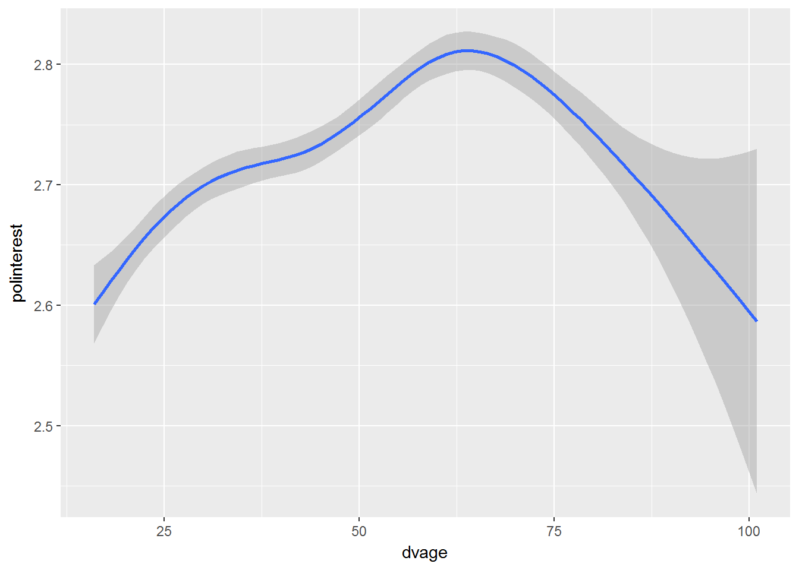

10 Modelling
Pre-requisite for this class: ch.22-24 (“Model”) from R for Data Science - http://r4ds.had.co.nz/model-intro.html
Let us explore how we can apply linear models with the Understanding Society data for your reports.
First we need to read in the data. This is the same data frame that I used for Data visualisation 2. I saved it then so now I can simply open the file.
library(tidyverse)
UndSoc <- readRDS("myData/all7clean.rds")We have a variable for interest in politics (vote6) and we will take it as the outcome variable we want to study. It is a discrete variable measured on a four-point scale (from “not at all interested” to “very interested”). It is an ordinal rather than continuous variable so strictly speaking it is not statisticaly appropriate to calculate the mean of this variable and to use simple linear regression. You will see though that we can still do this and learn something interesting from this exercise.
First let us look at the distribution of the variable.
table(UndSoc$vote6)##
## fairly not at all not very very
## 102212 84351 86790 30981To do the modelling we want to recode it to numeric. I will do this in such a way that larger values indicate stronger interest in politics.
UndSoc <- UndSoc %>%
mutate(polinterest = recode(vote6,
"very" = "4", "fairly" = "3",
"not very" = "2", "not al all" = "1")) %>%
mutate(polinterest = as.numeric(polinterest))
table(UndSoc$polinterest)##
## 2 3 4
## 86790 102212 3098110.1 Cross-sectional analysis
Let us start from cross-sectional analysis, i.e. the analysis of the data at one point in time. You can choose any wave to do this; I will go with wave 1.
First I create a separate data frame for wave 1 only.
wave1 <- UndSoc %>%
filter(wave == "a") %>%
filter(!is.na(dvage))10.1.1 Age and political interest
We will start with the association between age and political interest. It is always a good idea to start with visualisations.
wave1 %>%
ggplot(aes(x = dvage, y = polinterest)) +
geom_smooth()
I fit a non-parametric smooth here with geom_smooth, and the association between age and political interest seems to be non-linear.
We can also fit a regression line and see how well it describes the data.
wave1 %>%
ggplot(aes(x = dvage, y = polinterest)) +
geom_smooth() +
geom_smooth(method = "lm", colour = "red")Up to the age of about 70 years two lines are pretty close and I’d say that the linear function adequately describes the data. However, for people older than 75 the linear assocition is inadequate and provides a really poor fit.
10.1.2 Sex and political interest
Let us look at a bar chart showing the association between sex and political interest.
wave1 %>%
ggplot(aes(x = sex, y = polinterest)) +
geom_bar(stat = "summary", fun.y = "mean")We see that mean political interest is somewhat higher for men compared to women.
10.1.3 Linear model
As I said above, the outcome variable is ordinal so fitting a linear model will have some limitations. For our purposes this is fine though.
For your reports you should fit a linear model for ordered and binary outcomes. The linear model for binary outcomes is called the linear probability model. Please do not estimate logit or probit models for the purpose of this assignment. Of course, you cannot fit a linear model for nominal outcomes. If you outcome is nominal (this is unlikely), you should either stay with descriptive statistics and graphs or use a multinomial logit model. You should only do this if you are confident that you know what you are doing.
Now we can fit a simple linear regression model with two predictors: age and sex.
m1 <- lm(polinterest ~ sex + dvage, wave1)
summary(m1)##
## Call:
## lm(formula = polinterest ~ sex + dvage, data = wave1)
##
## Residuals:
## Min 1Q Median 3Q Max
## -0.9617 -0.6462 0.1435 0.3634 1.4375
##
## Coefficients:
## Estimate Std. Error t value Pr(>|t|)
## (Intercept) 2.5243012 0.0109096 231.38 <2e-16 ***
## sexmale 0.2103080 0.0073021 28.80 <2e-16 ***
## dvage 0.0023902 0.0002032 11.76 <2e-16 ***
## ---
## Signif. codes: 0 '***' 0.001 '**' 0.01 '*' 0.05 '.' 0.1 ' ' 1
##
## Residual standard error: 0.6796 on 34758 degrees of freedom
## (16233 observations deleted due to missingness)
## Multiple R-squared: 0.02699, Adjusted R-squared: 0.02694
## F-statistic: 482.1 on 2 and 34758 DF, p-value: < 2.2e-16Both age and sex are highly statistically significant predictors of political interest. Men on average are 0.3 points higher on the political interest scale. For age, a one-year difference is associated with about 0.01 change in political interest (older people are more interested). For two people with the age difference of about 30 years this corresponds to the difference in political interest of about 0.3.
We have seen that the association between age and political interest is non-linear. To model this, we may want to include the quadratic term for age.
m2 <- lm(polinterest ~ sex + dvage + I(dvage^2), wave1)
summary(m2)##
## Call:
## lm(formula = polinterest ~ sex + dvage + I(dvage^2), data = wave1)
##
## Residuals:
## Min 1Q Median 3Q Max
## -0.8971 -0.6681 0.1229 0.3422 1.5046
##
## Coefficients:
## Estimate Std. Error t value Pr(>|t|)
## (Intercept) 2.344e+00 2.487e-02 94.245 < 2e-16 ***
## sexmale 2.106e-01 7.295e-03 28.873 < 2e-16 ***
## dvage 1.081e-02 1.065e-03 10.148 < 2e-16 ***
## I(dvage^2) -8.534e-05 1.060e-05 -8.051 8.44e-16 ***
## ---
## Signif. codes: 0 '***' 0.001 '**' 0.01 '*' 0.05 '.' 0.1 ' ' 1
##
## Residual standard error: 0.679 on 34757 degrees of freedom
## (16233 observations deleted due to missingness)
## Multiple R-squared: 0.0288, Adjusted R-squared: 0.02872
## F-statistic: 343.6 on 3 and 34757 DF, p-value: < 2.2e-16The quadratic term is statistically significanty indicating a non-linear fit. Note, however, that the coefficients are now more difficult to interpret. We can visualise the association between age and political interest to get some idea of the effect size.
wave1 %>%
ggplot(aes(x = dvage, y = polinterest)) +
geom_smooth(method = "lm", formula = y ~ x + I(x^2))Note that this visualisation does not control for sex.
10.1.4 Interaction effect between sex and age
Another question we can ask is whether the association between age and political interest is the same or different for men and women. Note that in the previous model we control for sex, and the coefficient for age represents an averaged association between age and political interest for men and women. It is possible to have a situation where the association is very different for two sexes (for example, for men political interest increases with age and for women it decreases). To check this formally, we can fit a model with an interaction effect.
m3 <- lm(polinterest ~ sex * dvage, wave1)
summary(m3)##
## Call:
## lm(formula = polinterest ~ sex * dvage, data = wave1)
##
## Residuals:
## Min 1Q Median 3Q Max
## -0.9572 -0.6465 0.1438 0.3634 1.4401
##
## Coefficients:
## Estimate Std. Error t value Pr(>|t|)
## (Intercept) 2.5202621 0.0142701 176.611 <2e-16 ***
## sexmale 0.2188102 0.0206942 10.573 <2e-16 ***
## dvage 0.0024749 0.0002802 8.831 <2e-16 ***
## sexmale:dvage -0.0001787 0.0004070 -0.439 0.661
## ---
## Signif. codes: 0 '***' 0.001 '**' 0.01 '*' 0.05 '.' 0.1 ' ' 1
##
## Residual standard error: 0.6796 on 34757 degrees of freedom
## (16233 observations deleted due to missingness)
## Multiple R-squared: 0.027, Adjusted R-squared: 0.02691
## F-statistic: 321.5 on 3 and 34757 DF, p-value: < 2.2e-16We see that the interaction effect is indeed statistically significant and negative suggesting that for men the association between age and political interest is weaker.
We can also fit a quadratic model.
m4 <- lm(polinterest ~ sex * dvage + sex * I(dvage^2), wave1)
summary(m4)##
## Call:
## lm(formula = polinterest ~ sex * dvage + sex * I(dvage^2), data = wave1)
##
## Residuals:
## Min 1Q Median 3Q Max
## -0.9061 -0.6595 0.1183 0.3506 1.4727
##
## Coefficients:
## Estimate Std. Error t value Pr(>|t|)
## (Intercept) 2.434e+00 3.404e-02 71.496 < 2e-16 ***
## sexmale 1.827e-02 4.928e-02 0.371 0.71089
## dvage 6.477e-03 1.462e-03 4.431 9.40e-06 ***
## I(dvage^2) -4.032e-05 1.445e-05 -2.790 0.00528 **
## sexmale:dvage 9.371e-03 2.135e-03 4.389 1.14e-05 ***
## sexmale:I(dvage^2) -9.803e-05 2.127e-05 -4.610 4.05e-06 ***
## ---
## Signif. codes: 0 '***' 0.001 '**' 0.01 '*' 0.05 '.' 0.1 ' ' 1
##
## Residual standard error: 0.6788 on 34755 degrees of freedom
## (16233 observations deleted due to missingness)
## Multiple R-squared: 0.02941, Adjusted R-squared: 0.02927
## F-statistic: 210.6 on 5 and 34755 DF, p-value: < 2.2e-16The interaction effect is highly statistically significant. To make sense of the association between age and political interest for men and women it is best to visualise this model.
wave1 %>%
ggplot(aes(x = dvage, y = polinterest, colour = sex)) +
geom_smooth(method = "lm", formula = y ~ x + I(x^2))We can see that the lines for men and women are indeed different, although the non-linear pattern of the association is similar for both sexes.
10.1.5 Checking the assumptions
In Data Analysis 2 your task was to check the assumptions underlying linear regression models. This is an important step, but it is less relevant for our work in this module. Many of these assumptions are about the distribution of residuals and affect standard errors of regression coefficients. This is very important for small samples, but less important for large samples like the one we have in the Understanding Society where standard errors are usually small compared to regression coefficients and moderate violation of the regression assumpions (such as not normal distribution of the residuals and heteroskedasticity) will not affect the results much. You do not have to show how you have checked the assumptions in your reports (although if you want to do it for yourself this would not hurt).
Another common question is the interpretation of the R-squared coefficient. In Model 4 the R-squared coefficients was about 0.05 suggesting that age and sex can jointly account for about 5% of the variance of political interest. Is this an indication that the model is really poor? Yes, if your task is to build a model that predicts political interest well. This shows that just knowning a person’s age and sex you can only make a wild guess about their level of political interest (this isn’t really surprising).
However, if our task is simply to explore the association between age, sex and political interest rather than to build a model that predicts political interest well, then we should not pay too much attention to R-squared.
10.1.6 Presenting the output for multiple regression models
How to present the regression output in your reports? You can of course simply fo summary(m1) as we did above, but this does not look really nice. Another way is to use the package stargazer. Note that stargazer will only work if you knit your reports as pdf rather than Word. To knit as pdf you will need to install LaTeX on your computers (see https://www.latex-project.org). This is how the table produced by stargazer will look like.
library(stargazer)
stargazer(m1, m2, m3, m4, type = "html")| Dependent variable: | ||||
| polinterest | ||||
| (1) | (2) | (3) | (4) | |
| sexmale | 0.210*** | 0.211*** | 0.219*** | 0.018 |
| (0.007) | (0.007) | (0.021) | (0.049) | |
| dvage | 0.002*** | 0.011*** | 0.002*** | 0.006*** |
| (0.0002) | (0.001) | (0.0003) | (0.001) | |
| I(dvage2) | -0.0001*** | -0.00004*** | ||
| (0.00001) | (0.00001) | |||
| sexmale:dvage | -0.0002 | 0.009*** | ||
| (0.0004) | (0.002) | |||
| sexmale:I(dvage2) | -0.0001*** | |||
| (0.00002) | ||||
| Constant | 2.524*** | 2.344*** | 2.520*** | 2.434*** |
| (0.011) | (0.025) | (0.014) | (0.034) | |
| Observations | 34,761 | 34,761 | 34,761 | 34,761 |
| R2 | 0.027 | 0.029 | 0.027 | 0.029 |
| Adjusted R2 | 0.027 | 0.029 | 0.027 | 0.029 |
| Residual Std. Error | 0.680 (df = 34758) | 0.679 (df = 34757) | 0.680 (df = 34757) | 0.679 (df = 34755) |
| F Statistic | 482.108*** (df = 2; 34758) | 343.604*** (df = 3; 34757) | 321.462*** (df = 3; 34757) | 210.631*** (df = 5; 34755) |
| Note: | p<0.1; p<0.05; p<0.01 | |||
In your reports you will knit as LaTeX rather than html so you should do something like:
```{r results = 'asis'}
stargazer(m1, m2, m3, m4, type = "latex")
```The results argument shoud be set to asis so that the results are displayed correctly. Note that type is latex.
stargazer has many options to customise the tables. Please do experiment with them.
10.2 Longitudinal analysis
Now we may want to model how things change over time (i.e. do longitudinal modelling).
10.2.1 Simple model
We will start from simply plotting mean political interest over time.
# First let us code the variable for year.
UndSoc <- UndSoc %>%
mutate(year = dplyr::recode(wave, "a" = "2009",
"b" = "2010",
"c" = "2011",
"d" = "2012",
"e" = "2013",
"f" = "2014",
"g" = "2015")) %>%
mutate(year = as.numeric(year))
UndSoc %>%
group_by(year) %>%
summarise(
meanPI = mean(polinterest, na.rm = TRUE)
) %>%
ggplot(aes(x = year, y = meanPI)) +
geom_point() +
geom_line()The model that describes this chart will be the following.
m5 <- lm(polinterest ~ as.factor(year), UndSoc)
summary(m5)##
## Call:
## lm(formula = polinterest ~ as.factor(year), data = UndSoc)
##
## Residuals:
## Min 1Q Median 3Q Max
## -0.7669 -0.7407 0.2440 0.2628 1.2657
##
## Coefficients:
## Estimate Std. Error t value Pr(>|t|)
## (Intercept) 2.737205 0.003681 743.678 < 2e-16 ***
## as.factor(year)2010 0.009002 0.005131 1.754 0.079354 .
## as.factor(year)2011 -0.002951 0.005304 -0.556 0.577977
## as.factor(year)2012 0.003522 0.005405 0.652 0.514670
## as.factor(year)2013 0.009105 0.005447 1.671 0.094648 .
## as.factor(year)2014 0.018811 0.005557 3.385 0.000711 ***
## as.factor(year)2015 0.029738 0.005424 5.482 4.21e-08 ***
## ---
## Signif. codes: 0 '***' 0.001 '**' 0.01 '*' 0.05 '.' 0.1 ' ' 1
##
## Residual standard error: 0.6862 on 219976 degrees of freedom
## (364720 observations deleted due to missingness)
## Multiple R-squared: 0.0002287, Adjusted R-squared: 0.0002014
## F-statistic: 8.387 on 6 and 219976 DF, p-value: 4.063e-09We can see from this model that in 2011 to 2013 political interest was statistically significantly lower than in 2009, and in 2015 it was statistically significantly higher.
10.2.2 Adding a time-constant variable
We may want to check if the change in political interest depends on a time-constant variable such as sex. Was the change in mean political interest similar for men and women?
UndSoc %>%
filter(!is.na(sex)) %>%
group_by(year, sex) %>%
summarise(
meanPI = mean(polinterest, na.rm = TRUE)
) %>%
ggplot(aes(x = year, y = meanPI, colour = sex)) +
geom_point() +
geom_line()It does not look like there was an interaction between sex and year, but we can check it formally.
m6 <- lm(polinterest ~ as.factor(year)*sex, UndSoc)
summary(m6)##
## Call:
## lm(formula = polinterest ~ as.factor(year) * sex, data = UndSoc)
##
## Residuals:
## Min 1Q Median 3Q Max
## -0.8686 -0.6524 0.1492 0.3580 1.3670
##
## Coefficients:
## Estimate Std. Error t value Pr(>|t|)
## (Intercept) 2.6382492 0.0050051 527.109 < 2e-16 ***
## as.factor(year)2010 0.0141597 0.0069812 2.028 0.0425 *
## as.factor(year)2011 -0.0052163 0.0072341 -0.721 0.4709
## as.factor(year)2012 0.0037539 0.0073914 0.508 0.6115
## as.factor(year)2013 -0.0009026 0.0074550 -0.121 0.9036
## as.factor(year)2014 0.0167203 0.0075943 2.202 0.0277 *
## as.factor(year)2015 0.0365789 0.0073908 4.949 7.45e-07 ***
## sexmale 0.2098474 0.0072886 28.791 < 2e-16 ***
## as.factor(year)2010:sexmale -0.0114441 0.0101599 -1.126 0.2600
## as.factor(year)2011:sexmale 0.0021654 0.0105007 0.206 0.8366
## as.factor(year)2012:sexmale -0.0052459 0.0106972 -0.490 0.6239
## as.factor(year)2013:sexmale 0.0153998 0.0107808 1.428 0.1532
## as.factor(year)2014:sexmale 0.0002630 0.0109983 0.024 0.9809
## as.factor(year)2015:sexmale -0.0160510 0.0107396 -1.495 0.1350
## ---
## Signif. codes: 0 '***' 0.001 '**' 0.01 '*' 0.05 '.' 0.1 ' ' 1
##
## Residual standard error: 0.6784 on 219968 degrees of freedom
## (364721 observations deleted due to missingness)
## Multiple R-squared: 0.02307, Adjusted R-squared: 0.02301
## F-statistic: 399.5 on 13 and 219968 DF, p-value: < 2.2e-16This suggest that the gap in political interest between men and women was slighty hgher in 2013, but the effect size is really small.
10.2.3 Adding a time-varying variable
Things get more tricky (and more interesting) if we want to add a time-varying variable such as age to the analysis. We have already modelled the association between age and political interest cross-sectionally. This answers the question of whether there is any difference in political interest between people of different age.
Another question that we may want to ask is whether political interest changes when people get older. Note that this is a different question, and answering it requires the use of longitudinal data.
To answer this question we need to apply regression models with fixed effects. You have not covered these models in Data Analysis 2. The main idea is to look at the changes for the same individuals. We want to see if for each person in the data getting older is associated with the changes in political interest, and then we can average the effects across different people. In other words, instead of fitting the model that compares between individuals we want to compare within individuals.
Technically, we can achieve this by simply controlling for individual id.
With the data of our size the model will be very difficult to estimate, so for the demonstration purposes I will select 500 random individuals from the data and run the model for them.
# creating a data frame with data for 500 random people
set.seed(1)
random500 <- sample(unique(UndSoc$pidp), 500)
UndSoc500 <- UndSoc %>%
filter(pidp %in% random500)
m7 <- lm(polinterest ~ as.factor(year) + as.factor(pidp) + dvage, UndSoc500)If we run summary(m7) now we will get a really long output with 499 coefficients for pidp. I will use stargazer to present the results and will omit these coefficients (called individual fixed effects) and the coefficients for year.
stargazer(m7, omit = c("pidp", "year"), type = "html")| Dependent variable: | |
| polinterest | |
| dvage | 0.048 |
| (0.071) | |
| Constant | 0.867 |
| (4.246) | |
| Observations | 1,338 |
| R2 | 0.697 |
| Adjusted R2 | 0.574 |
| Residual Std. Error | 0.452 (df = 950) |
| F Statistic | 5.655*** (df = 387; 950) |
| Note: | p<0.1; p<0.05; p<0.01 |
Note that the coefficient for age is not statisticaly significant. This indicates that as people get older their interest in politics does not change much, at least in our sub-sample of 500 people.
A more efficient way to estimate fixed effects model is to use the package plm.
library(plm)
m8 <- plm(polinterest ~ dvage, data = UndSoc500, model = "within", index = c("pidp", "year"),
effect = "twoways")
summary(m8)## Twoways effects Within Model
##
## Call:
## plm(formula = polinterest ~ dvage, data = UndSoc500, effect = "twoways",
## model = "within", index = c("pidp", "year"))
##
## Unbalanced Panel: n = 381, T = 1-7, N = 1338
##
## Residuals:
## Min. 1st Qu. Median 3rd Qu. Max.
## -1.49866 -0.19252 0.00000 0.17069 1.50937
##
## Coefficients:
## Estimate Std. Error t-value Pr(>|t|)
## dvage 0.048088 0.070771 0.6795 0.497
##
## Total Sum of Squares: 193.86
## Residual Sum of Squares: 193.77
## R-Squared: 0.00048575
## Adj. R-Squared: -0.40668
## F-statistic: 0.461689 on 1 and 950 DF, p-value: 0.497Asking for the twoways effect means that we fit the model with individual and year fixed effects.
Note that the effect size is exactly the same in models 7 and 8 (becuase this is essentially the same model), but plm will work faster. With plm you may be able to estimate the fixed effects model with the full data for your reports, although the estimation will take you some time. I will not do this here.
10.3 Further reading
If you want to use linear models in your assignment I strongly recommend you consult the following book (available as an e-book in the library):
- J.Fox, S.Weisberg. (2011). An R Companion to Applied Regression. 2nd ed. Sage.
The chapter on factors and interactions will be particularly useful.
If you want to know more about fixed effects models see
- P.D.Allison. (2008). Fixed Effect Regression Models. Sage.
To learn how to use the package plm read
- Y.Croissant, G.Millo. Panel Data Econometrics in R: The plm Package. https://cran.r-project.org/web/packages/plm/vignettes/plm.pdf